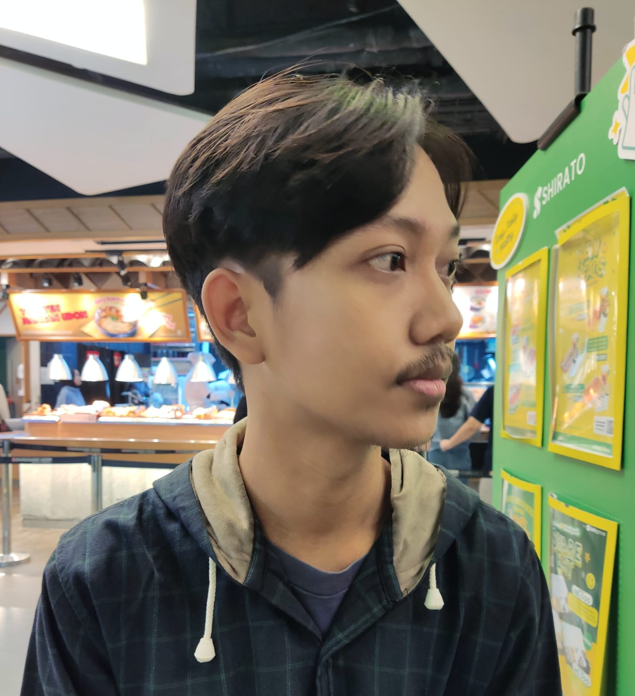

(Igo Prayoga Suratno - Mahasiswa Universitas Mercu Buana)
Saya adalah mahasiswa jurusan Teknik Informatika di Universitas Mercu Buana. Saya memiliki minat dalam bidang pengembangan web dan sedang belajar berbagai teknologi seperti HTML, CSS, dan JavaScript.
Tujuan saya membuat portofolio ini adalah untuk memenuhi tugas mata kuliah Pemrograman Web serta sebagai langkah awal dalam membangun kehadiran online saya sebagai seorang calon pengembang web.